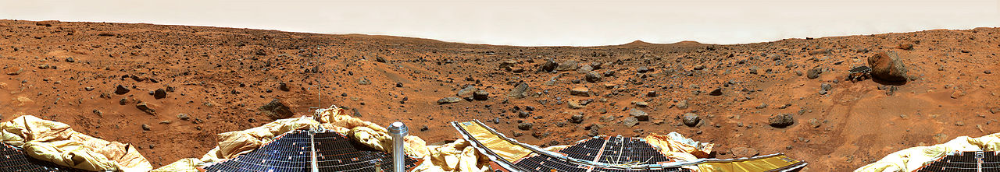

Breve historia de los Rovers
Rover es un vehículo para diseñado para moverse por un planeta o objeto astronómico Wikipedia
OBJETIVO LUNA
Los primeros rovers: Los Lunojods
Lunojod1, Rusia lo lanzó en noviembre 1970 y recorrió más de 10km por la luna, con 4 cámaras de TV, telescopio RX, espectómetro... la tapa se abría de día para recargar las batería y por la noche se cerraba para mantener los circuitos calientes con el refuerzo de una pila atómica. A pesar de que se perdió su rastro después de 11 días lunares (11 meses terrestres, a pesar de que se diseñó sólo para 3), en 2010 se volvío a localizar y aún se utiliza su reflector.
De Petar Milošević - Trabajo propio, CC BY-SA 3.0
En 1973 Rusia lanzó el Lunjod2, sólo duró 5 meses terrestres, debido a que en su aterrizaje rozó la pared de un crater lunar, lo que provocó que cayera polvo en sus radiadores provocando sobrecalentamientos, pero aún así recorrió 37 km, sólo superado por en el 2018 por la Oportunity.
De NASA/JPL-Caltech, Dominio público
Vehículos lunares
Para las misiones Apolo 15, 16 y 17 los astronautas usaron tres LRVs Lunar Roving Vehicle pesaban casi media tonelada y podían llevar otra media incluyendo dos astronautas a 13 km/h
Yutu
China envía dos rovers, el primero en el 2013 duró 31 meses y (diseñado para 3) y el segundo Yutu en el 2018, el único en la cara oculta de la luna, sigue en la actualidad funcionando.
OBJETIVO MARTE:
Primer éxito parcial Mars 3 y su rover PrOP-M
Rusia lanza los Mars, el primero se estampa en la superficie, pero el segundo Mars -3 aterriza el 2 de diciembre 1971, pero sólo transmitió 20 segundos, llevaban un rover, los PrOP-M y no sabemos si llegó a ser desplegado o no.
Su diseño era muy ingenoso:
¿Tán dificil es aterrizar en marte?
Para la tecnología de la época y lo dificil que es aterrizar en Marte fué para quitarse el sombrero, ten en cuenta que de casi 50 intentos de llegar a Marte, la mitad han fracasado y sólo 5 han llegado a poner un Rover.
Primer éxito confirmado: Mars Pathfinder y su rover Sojourner
En 1996 la NASA lanza la Pathfinder con la técnica de frenar el aterrizaje con airbag, al desplegar, salío el rover Sojourner, lo puedes ver en la foto a la derecha examinando una roca. Realizó numerosos análisis de rocas y del clima de Marte

La Curiosity un rover aún vivo
En 2011 NASA envió la Mars Science Laboratory (MSL) con su rover Curiosity. Aterrizó suavemente con paracaídas y retrocohetes y ha enviado numerosos datos sobre indicadores de posible vida en Marte.
Esta foto es un selfie en Marte :
De NASA/JPL-Caltech/Malin Space Science SystemsDerivative work including grading, distortion correction, minor local adjustments and rendering from tiff-file: Julian Herzog , Dominio público
Ha enviado fotos impresionantes como esta del Monte Sharp
De NASA/JPL-Caltech/MSSS, Dominio público
Tiene una pila atómica que aún le proporciona energía y a pesar de numerosos incidentes, la misión no ha finalizado, sigue moviéndose y aún puede enviarnos alguna foto, siguelo en Twitter.
Spirit
En el 2004 Nasa lanza este rover, preparado para perforar rocas y encontró sal, por lo que es una prueba indirecta de presencia de agua históricamente en Marte. Se diseñó para sobrevivir 3 meses y duró 7 años, y porque una tormenta de arena lo atrapó. Podemos ver una suya foto de una tormente de arena:
By NASA from English Wikipedia, Public Domain
La actualidad: Perserverance
Esta misión está actualmente en curso (6/3/21) su aterizaje fué un éxito :
Y tiene muchas expectativas :
El futuro: exploración de astros.
En 2014 ESA manda una sonda espacial Rosseta ) al cometa 67P, orbita alrededor del cometa y desprende la sonda Philae que aterriza en el cometa. Sus resultados desmontaron algunas teorías ampliamente aceptadas, como la creencia de que el agua de la Tierra viene de los cometas, técnicamente no fue un rover pues no se movía por la superficie, no me extraña, si parece el Everest :

ESA/Rosetta/MPS for OSIRIS Team MPS/UPD/LAM/IAA/SSO/INTA/UPM/DASP/IDA – CC BY-SA 4.0, CC BY-SA 4.0
Esto abre las posibilidades de exploración espacial a otros astros, por ejemplo, explorar el satélite Europa y encontrar vida en su mar interior.
Mi opinión
En 1957, con la Sputnik, despega la carrera espacial, que sus causas son :
- Desarrollar los misiles intercontinentales miltares.
- Espionaje militar espacial con los satélites
- Políticos: Cada logro espacial significaba vanidad; eres el país más avanzado tecnológicamente.
Los logros de Rusia son indiscutibles, pero las prisas no son buenas, en el desastre de Nedelín murieron grandes cerebros de la ingeniería espacial rusa. (Recomiendo el libro Grandes desastres tecnológicos de Félix Ballesteros Rivas y Koldobica Gotxone Villar)
USA pudo despegar con ayuda de los antiguos ingenieros nazis (vease Von Braun ). Con una NASA con presupuesto ilimitado, USA pudo llegar al final de la loca carrera de llevar un hombre en la luna.
Loca en mi opinión, pues la relación logros/(coste económico y vidas) de enviar satélites y rovers es muchísimo más alto que enviar humanos. Una vez que se pierde interés, los humanos se reemplazan por robots, vease que después del programa espacial Apolo ya no se ha vuelto a la luna, y que después del desastre de las lanzaderas espaciales han vuelto a los cohetes no tripulados.
Un ejemplo de contradicción: La estación espacial internacional ha costado 100.000 millones $, frente al criticado acelerador CERN que ha costado 1.000 millones con mucho más logros científicos. La estación internacional se está quedando sin experimentos y mantenerlo cuesta 300 millones al año. Tener humanos por el espacio es muy caro.
Seguimos queriendo enviar un hombre en Marte, que se convertirá en otra loca carrera de vanidad ¿Cuánto dinero va a costar? ¿Qué logros científicos va a conseguir diferentes o mejores que los que hace un rover?. Volvemos a caer en los errores del pasado.

Rover Marciano Alphabot por Javier Quintana Peiro bajo licencia Creative Commons Reconocimiento-NoComercial-CompartirIgual 4.0 Internacional License.